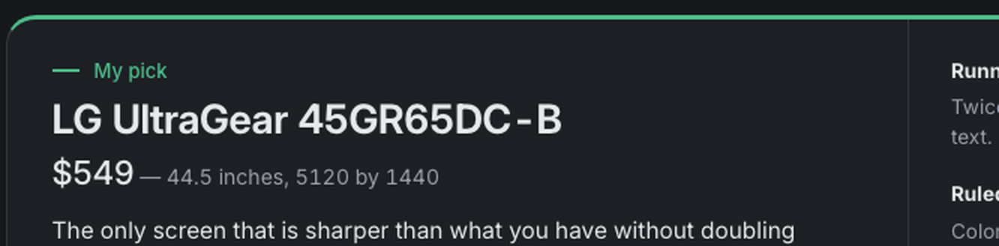
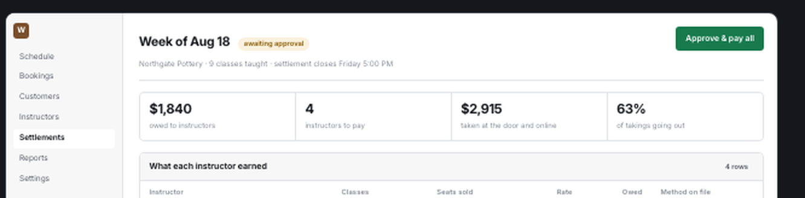
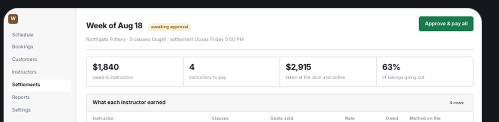
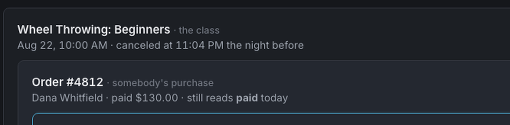
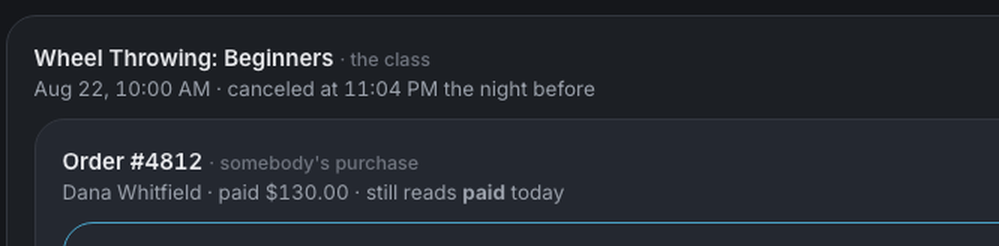
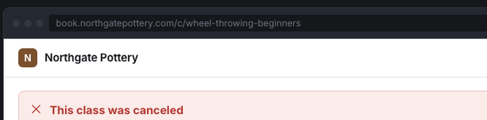

The claim behind the whole rebuild, tested rather than asserted.
I changed the corner radius in the stylesheet from 8 pixels to 20, re-rendered every page without opening one of them, and photographed the same region before and after. Then I put the value back. Nothing else was edited.
This is the thing yesterday's pages could not do. Every one of them carried its own styling written onto each element, so changing the middle changed nothing.
✓Five pages show it in the visible region; the sixth shows it lower down, where its only rounded block sits.
One line in report.css went from 8px to 20px. No page file was opened. The renders below are the same crop of the same page, twice, with only that line different between them.
Findings, before — the verdict plate at 8px.

After — 20px. Same markup, same page file.

Decision, before — the frame around the miniature at 8px.

After.

Explainer, before — the nesting doll shells at 8px.

After.

The thing itself, before — the browser frame around a drawn screen at 8px.
After.
✓Every page changed, and every change is confined to the corners of rounded blocks.
Comparing the two renders pixel by pixel gives both the count of pixels that moved and the box they moved inside. If the change had leaked into type or spacing, the region would cover the whole page rather than a band of corners.
| Page | Pixels changed | Where they changed |
|---|---|---|
| Findings | 534 | the verdict plate and the flaws row corners |
| Explainer | 2,212 | the callout, the nesting doll shells and the table box |
| Proof | 1,192 | the capture frames |
| Thing itself | 1,722 | the browser frames around the two drawn screens |
| Decision | 2,636 | the miniature frame and the two option cards |
| Mission map | 454 | the question panel, 2,200 pixels down the page |
The mission map is the honest one. Its visible top is a rail and a timeline, neither of which is a rounded block, so the first capture showed no change at all. Its only rounded thing is the question panel further down — and that panel is rounded on its right side only, which is exactly the strip the comparison found.
The corner radius is the most visible one to test. The stylesheet names five values that govern how every page sits: the stage width, how wide prose runs, the two corner radii, and the air between sections. Each behaves the same way — change it once, and the pages follow without being opened.
| The value | What it governs | Now |
|---|---|---|
| Stage width | how wide the page runs before it stops | 1,680px |
| Prose measure | how wide a paragraph runs | uncapped |
| Plate radius | the corners on plates, cards and frames | 8px |
| Chip radius | the corners on chips, buttons and inputs | 4px |
| Section gap | the air between top-level sections | 68px |
The stylesheet is the center, and this is what having a center buys: a value changes once and every page that links it follows, without being opened. That was the whole argument for two days of rebuilding, and it is now a demonstrated fact rather than a claim.
Rendered 13 August 2026 in Chrome at 1120 pixels wide. One line of report.css edited, six pages re-rendered untouched, the line reverted. Pixel counts are a direct comparison of the two renders of each page.